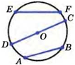
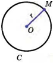
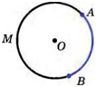

Задачи на построение
Окружность
Окружностью называется геометрическая фигура, состоящая из всех точек плоскости,
расположенных на
заданном расстоянии от данной точки.
Данная точка называется центром окружности, а отрезок, соединяющий центр с какой-либо точкой
окружности, — радиусом окружности (рис. 1). Из определения окружности следует, что все радиусы
имеют одну и ту же длину.

Отрезок, соединяющий две точки окружности, называется ее хордой. Хорда, проходящая через центр
окружности, называется диаметром.
На рисунке 2 отрезки АВ и EF — хорды окружности, отрезок CD — диаметр окружности. Очевидно,
диаметр окружности в два раза больше ее радиуса. Центр окружности является серединой любого
диаметра.

Любые две точки окружности делят ее на две части. Каждая из этих частей называется дугой
окружности. На рисунке 3 ALB и АМВ — дуги, ограниченные точками А и В.
Для изображения окружности на чертеже пользуются циркулем. Чтобы провести окружность на местности,
можно воспользоваться веревкой.

Часть плоскости, ограниченная окружностью, называется кругом.